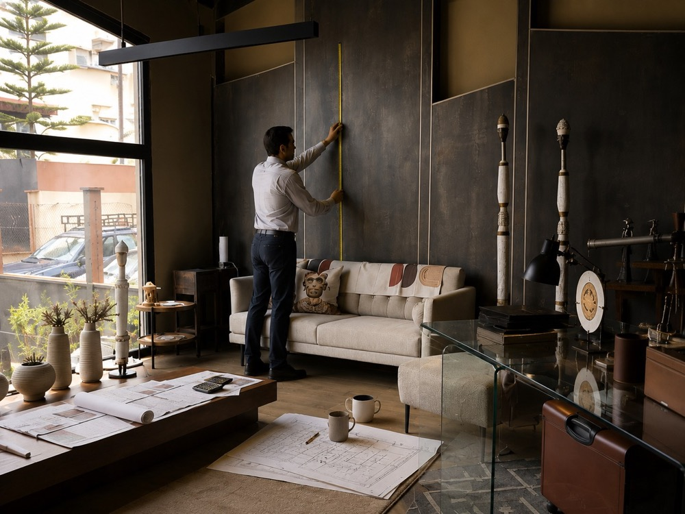

Most transformations create activity. Very few change how work gets done. Six months later, the old way is back.
Free diagnostic: 20 questions, about 4 minutes, instant result.
Unless the way people work changes, the organisation returns to the same behaviour, whatever the software, the consultants or the programme name.
The process lives in people, not systems. Every new hire means months of tribal knowledge.
New tools rolled out. Adoption stalled. The old way quietly survived.
Paying for both, trusting neither, waiting for the change to land.
Six weeks on one live programme: one baseline, decision rights, change gated, and a cadence your team runs after we leave.
See the Turnaround →Project management support for offices, shops and showrooms in new countries.
Visit Ready to OpenFor property portfolios run from head office.
See the RESHAPE Special Report and articles
The same room, two operating models.
The same five controls apply at every stage. What changes is where you start.
Not on its own. If teams still rely on spreadsheets and workarounds, the system hasn’t changed how the work gets done.
The handover is a core deliverable: templates, standards and a cadence your team runs without us.
Ready to Open is built for offices, shops and showrooms in new countries.
Fees are fixed and confirmed after the review call, because they depend on programme size and complexity.
Take the free diagnostic. It takes about four minutes and points you to the stage that fits. There’s a full list of stages on the homepage.
Twenty questions. About four minutes. Your level straight away.